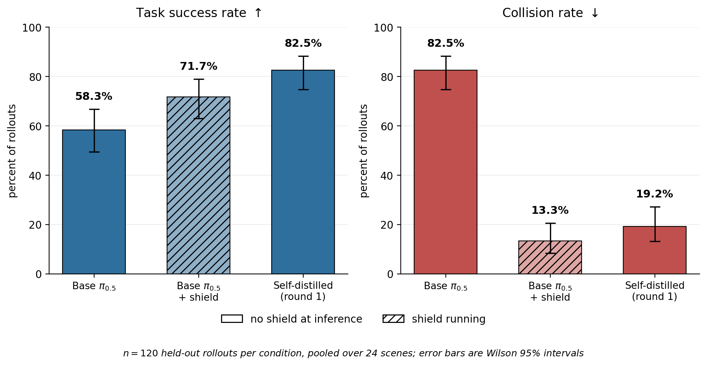

Overview
Vision-language-action models currently are great generalists, but showcase poor safe performance in real world cluttered environments. Evaluation here runs on SafeLIBERO — the LIBERO manipulation suite with an obstacle placed in the workspace. On it, the 3B-parameter π0.5 policy knocks a non-target obstacle out of place in 82.5% of episodes.
The standard remedy is a post-inference filter that projects every proposed action onto a safe set. It works, but it is a partial solution, which introduces complications of its own , such as safety-induced distribution shift. This work asks whether that corrective behaviour can instead be internalised into the model itself.
Contributions
Runtime safety is distillable
A control-theoretic safety filter, distilled from a VLA's own shielded rollouts and evaluated with the filter removed — in the setting where runtime shielding is the current state of the art. One round cuts collisions from 82.5% to 19.2% with nothing running at inference.
Distil first, then shield
The safest configuration measured anywhere in this work is a distilled policy with the shield reattached: 8.3% collisions, 91.7% avoidance, at a success rate indistinguishable from shielding the base policy. Where a safety case demands a runtime constraint, a distilled policy is the better thing to attach it to.
It only transfers from the right teacher
A geometry-privileged motion planner, supplying corrections of equal density under the same shield, transferred nothing measurable. What transfers is correction at states the policy itself reaches — which also makes safe data about twice as cheap to collect with the shield on (39% yield against 18%).
Headline numbers
Self-distilled π0.5 after one round, in each of the two deployment configurations, both measured against the undistilled base policy running with no shield. n = 120 held-out initial states pooled over 24 scenes.
Results

| Policy | Shield | TSR (95% CI) | Collision (95% CI) | CAR | Shield act. | ETS |
|---|---|---|---|---|---|---|
| Base π0.5 | off | 58.3% [49.4, 66.8] | 82.5% [74.7, 88.3] | 17.5% | — | 138.6 |
| Base π0.5 | on | 71.7% [63.0, 79.0] | 13.3% [8.4, 20.6] | 86.7% | 0.355 | 160.6 |
| Self-distilled, round 1 | off | 82.5% [74.7, 88.3] | 19.2% [13.1, 27.1] | 80.8% | — | 157.3 |
| Self-distilled, round 1 | on | 70.8% [62.2, 78.2] | 8.3% [4.6, 14.7] | 91.7% | 0.177 | 170.0 |
| Self-distilled, round 2 | off | 80.8% [72.9, 86.9] | 17.5% [11.7, 25.3] | 82.5% | — | 158.8 |
| Self-distilled, round 2 | on | 72.5% [63.9, 79.7] | 9.2% [5.2, 15.7] | 90.8% | 0.182 | 176.7 |
Shield activation is the fraction of control steps the projection changed; ETS is the step at which success first held, over successful rollouts only. Round 2 changes nothing measurable. The matched control, the per-body attribution and the teacher comparison behind contribution three are in the thesis.
Watch it
Every clip is base π0.5 on the left and our self-distilled policy on the right.
Cite
@mastersthesis{rodriguez2026distilling,
title = {Distilling Runtime Safety into VLA Robot Policies},
author = {Rodriguez Garza, Alejandro},
school = {University College London},
type = {{MSc} thesis, Robotics and Artificial Intelligence},
year = {2026},
}
The SafeLIBERO benchmark and the runtime-shielding baseline are due to Hu et al., VLSA: Vision-Language-Action Models with Plug-and-Play Safety Constraint Layer. The base policy is π0.5 (Physical Intelligence); the environment is LIBERO on robosuite / MuJoCo.